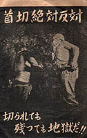
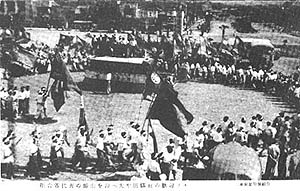
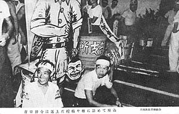
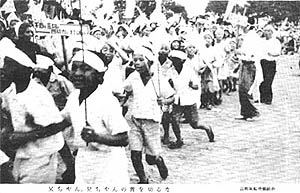
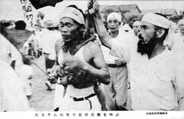
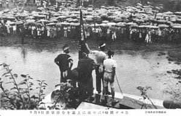
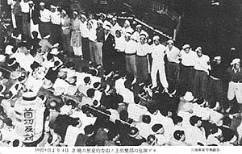
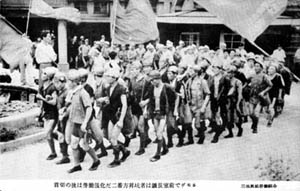
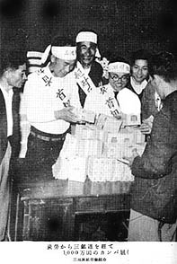

<!DOCTYPE HTML PUBLIC "-//W3C//DTD HTML 4.01 Transitional//EN">
<HTML>
<HEAD>
<META http-equiv="Content-Type" content="text/html>
<META http-equiv="Content-Style-Type" content="text/css" media="all">
<TITLE>みいけ展示室</TITLE>
</HEAD>
<BODY>
<BLOCKQUOTE>
<TABLE>
  <TBODY>
    <TR>
      <TD width="516">
      <P class="MsoNormal" style="text-indent:71.65pt;mso-char-indent-count:4.92"><B style="mso-bidi-font-weight:normal"><FONT color="red" size="+1">展示品</FONT><SPAN lang="EN-US" style="font-size:16.0pt;
mso-font-width:90%"></SPAN></B><BR>
      </P>
      <TABLE>
        <TBODY>
          <TR>
            <TD width="91"></TD>
            <TD width="404">　　　<B>「企業整備反対闘争」絵はがき</B><P>
　　　　　　発行　三池炭鉱労働組合<P>
            　　　　　　　　　（提供　江嶋氏）
            </TD>
          </TR>
        </TBODY>
      </TABLE>
      <p class=MsoNormal style='text-indent:11.0pt;mso-char-indent-count:1.0;
line-height:17.0pt;mso-line-height-rule:exactly'><FONT face="MS UI Gothic">三池炭鉱労働組合発行の
8枚組袋入り絵はがき。袋の裏には「正常なる労使のルールを蹂躙し、不法にも組合の弱体化と資本の利益追求のみを
企図した三井鉱山五千余名の首切りに対し五万の労働者と二十万家族は血の一滴までも傾け盡した斗争を展開している。
秋の日に顔をやき、寒空に幼児を抱き乍ら官憲の弾圧にもめげず会社の不誠意を追及し続けて既に九十日。此の斗いこそ、
全労働者の首切りに繋り、平和への途である事を信じて疑はない　三池炭鉱労働組合」と書かれてある。<BR>
　絵はがき作成の目的は、同組合員はもとより、主に全国の支援労組から資金カンパを得るために頒布されたものと思わ
れる。<spanlang=EN-US style='font-size:11.0pt'></span><BR>
　「此の斗い」とは、「企業整備反対闘争」のことで、昭和28年8月7日、三井鉱山が鉱員5738人（うち三池関係1722人）
の希望退職者募集を発表したことに端を発し、全山で696人が退職するも2768人は拒否、結果、その2768人に対し指名
解雇が通告され、9月より首切り反対闘争が展開されていった。<BR>
　同年12月5日、ついに会社側は指名解雇を撤回、組合側の勝利となった。これは113日にもわたる家族ぐるみの闘いで
あり、別名「英雄なき113日の闘い」とも呼ばれた。<BR>
</FONT></p>
<p>

<!--写真1-->
<center></center>
<p class="MsoPlainText" align="center"><font size="2">拒否者代表の帰山を迎え大牟田駅前の歓迎デモ　三池炭鉱労働組合</font><span lang="EN-US"></o:p>
<p>
<span style="font-family:&quot;ＭＳ ゴシック&quot;;mso-hansi-font-family:
&quot;Courier New&quot;">　
</span>

<p>

<!--写真2-->
<center></center>
<p class="MsoPlainText" align="center"><font size="2">首切り辞令は返上だ　棺桶や樽に詰めて座込み　三池炭鉱労働組合</font><span lang="EN-US"></o:p>
<p>
<span style="font-family:&quot;ＭＳ ゴシック&quot;;mso-hansi-font-family:
&quot;Courier New&quot;">　
</span>

<p>

<!--写真3-->
<center></center>
<p class="MsoPlainText" align="center"><font size="2">父ちゃん、兄ちゃんの首を切るな　三池炭鉱労働組合</font><span lang="EN-US"></o:p>
<p>
<span style="font-family:&quot;ＭＳ ゴシック&quot;;mso-hansi-font-family:
&quot;Courier New&quot;">　</span>

<p>

<!--写真4-->
<center></center>
<p class="MsoPlainText" align="center"><font size="2">父ちゃんの背で首切り反対を叫ぶ　三池炭鉱労働組合</font><span lang="EN-US"></o:p>
<p>
<span style="font-family:&quot;ＭＳ ゴシック&quot;;mso-hansi-font-family:
&quot;Courier New&quot;">　</span>

<!--写真5-->
<center></center>
<p class="MsoPlainText" align="center"><font size="2">9月4日首切り辞令を返上に雨中に8時間デモる　三池炭鉱労働組合</font><span lang="EN-US"></o:p>
<p>
<span style="font-family:&quot;ＭＳ ゴシック&quot;;mso-hansi-font-family:
&quot;Courier New&quot;">　
</span>

<p>

<!--写真6-->
<center></center>
<p class="MsoPlainText" align="center"><font size="2">10月8日より4日3晩の歴史的な山ノ上倶楽部の包囲デモ　三池炭鉱労働組合</font><span lang="EN-US"></o:p>
<p>
<span style="font-family:&quot;ＭＳ ゴシック&quot;;mso-hansi-font-family:
&quot;Courier New&quot;">　
</span>

<p>

<!--写真7-->
<center></center>
<p class="MsoPlainText" align="center"><font size="2">首切りの後は労働強化だ　二番方昇坑者は鉱長室前でデモる　三池炭鉱労働組合</font><span lang="EN-US"></o:p>
<p>
<span style="font-family:&quot;ＭＳ ゴシック&quot;;mso-hansi-font-family:
&quot;Courier New&quot;">　
</span>

<p>

<!--写真8-->
<center></center>
<p class="MsoPlainText" align="center"><font size="2">炭労から三鉱連を経て1000万円のカンパ届く　三池炭鉱労働組合</font><span lang="EN-US"></o:p>
<p>
<span style="font-family:&quot;ＭＳ ゴシック&quot;;mso-hansi-font-family:
&quot;Courier New&quot;">　</span>

      </TD>
    </TR>
  </TBODY>
</TABLE>
</BLOCKQUOTE>

</BODY>
</HTML>
